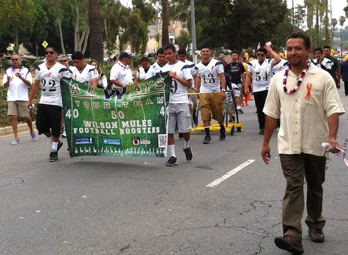
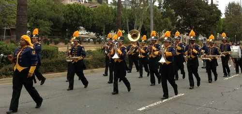

By Ray Rios
On Saturday June 28th the El Sereno Bicentennial Committee together with the CD14 office, hosted the 55th Annual Independence Day Parade and 7th Annual Fireworks show and concert in El Sereno.


The annual parade is a showcase for the accomplishments and talents of local community groups and a great source of pride for El Sereno. This year an estimated seventy five entrants, from Church groups to business owners, from celebrities to local politicians, from Honorary Mayors to young Queen Courts and from the small El Sereno Stallions Cheer Team to the larger Wilson High School Marching Band, cheerleaders, and drill team joined in the mid-morning parade.,
Councilman Jose Huizar was this year’s honorary Grand Marshall and popular community voice Louie Moreno was master of ceremonies from his post at the corner of Eastern and Lombardy. The Wilson High Football team towed the coveted Victory Bellwhich they won back from Franklin High this season. The proud team was accompanied by alumni from the Wilson Booster Club and 1970s Wilson football great Ron Cuccia “The Italian Stallion” who made a special appearance.
The Independence Day celebration continued at El Sereno Park where Councilmember Jose Huizar, together with an estimated 3,000 residents out to enjoy the special evening, kicked off the 7th Annual Fireworks and Concert event. Food was available from fundraising community groups, while other groups hosted information booths to share community resources.
The concert was hosted by Eddie Santillan, and Liz Gonzalez from Red 67 Productions oversaw the music venue. The bands included La Bestia, Best of Times and, a crowd favorite, The Disco Kings.
Positive and successful events like this don’t happen overnight. They are the result of months of planning by many people. Many thanks to the dedicated members of the El Sereno Bicentennial Committee who worked closely with the CD 14 staff to bring the community of El Sereno a memorable and special day.